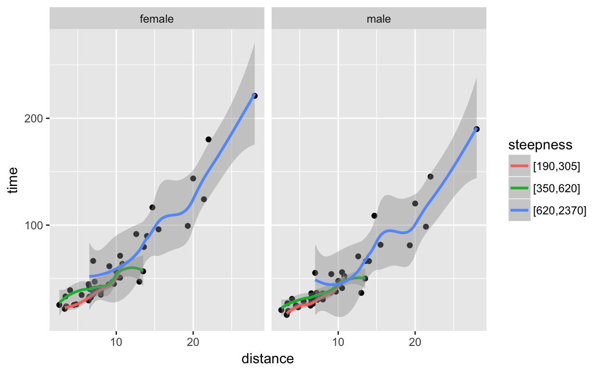
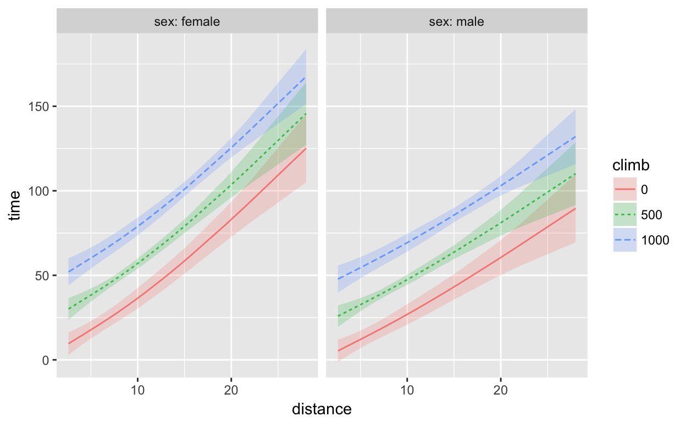

On the first day of intro stats, students should be working with data. Graphics is a good place to start: it’s motivating, it’s colorful, and it provides an opportunity to lay out basic concepts.
The GAISE College Report (2016) uses several data sets as examples. One of them is the winning times in Scottish hill races. [GAISE pp. 40-41] We’ll start with that. Here is the data table:
In addition to the data table, there is a codebook that explains the data:
These are races from January 1 to June 22. The
distanceis in km, theclimbin meters. The variabletimegives the winning time in minutes.
Suppose that you want to study the relationship between the distance of a race and the time it takes to run it. One way to look at the data is graphically, say plotting distance versus time or vice versa.
Hillrace %>% gf_point(time ~ distance)Some relevant points to make to students:
winner ~ distance is pronounced “winner versus distance” or “winner against distance” or “winner as a function of distance.” The symbol ~ is pronounced “tilde”.One objective of statistics is to describe relationships among variables. For instance, in this graphic, you can see an obvious trend: races of a greater distance take longer to run. But you can also see that even for a fixed distance, the winning times vary. This particular graph doesn’t give any explanation for why the times vary. Perhaps that’s due to weather, the bogginess of the trail, or some other factors.
You can see the trend from the dots in the graph. Sometimes it’s helpful to sketch out the trend as a simplified pattern. Try this:
Hillrace %>%
gf_point(time ~ distance) %>%
gf_smooth(time ~ distance)The blue curve is a model of the relationship between time and distance. There are many other models that could be drawn. This one seems reasonable because it is close to the data.
Student activity: Look at races of short distances, say less than 10 km, cover up the rest of the graph and you’ll see that the model is pretty much a straight line. If you were to extend that line, keeping in straight, would the line be above or below the blue model for distances of 15 to 30 km? Explain what this might mean in terms of running and endurance.
Distance and time are variables. So are sex, climb, and even the name of the race.
We supposed at the outset that we’re interested in the relationship between the distance and time variables. Sometimes relationships involve other factors. For instance, the runner’s sex may have something to do with how long it takes to complete the race. The vertical climb may be important. And there may be other factors that we didn’t measure or record and so aren’t among the variables in the data table.
One of the ways that statistics tries to simplify the description of relationships among variables is to identify one variable of interest as the “response variable.” Here, for instance, a reasonable choice of the response variable is the winning time. The other variables that we use to account for or explain the variation in the response variable are called “explanatory variables.”
Let’s add in sex as an explanatory variable. One way to do this is to use sex to determine the color or size or shape of each dot. Like this:
Hillrace %>%
gf_point(time ~ distance + color:sex) %>%
gf_smooth(time ~ distance + color:sex)We used sex when drawing the points, but sex isn’t playing any role in the model. Modify the above code to add + color:sex to the model.
Student activity: The statistical “effect size” of sex on time is the vertical distance between the female and male model curves in the graph. Measure how big that effect size is at 10 km. Does the effect size of sex depend on the race distance?
For an intro to wrangling

